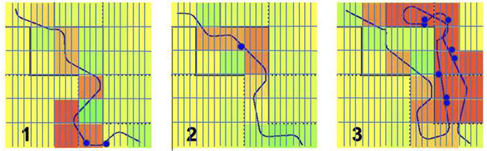
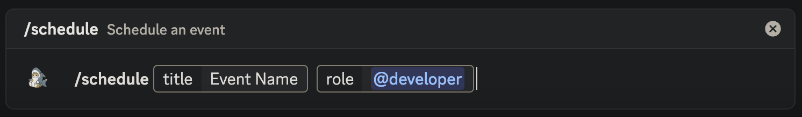
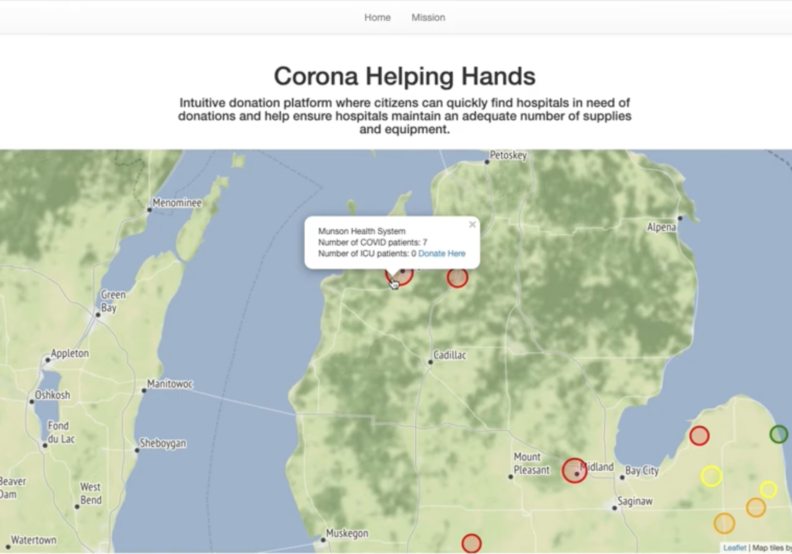

Hi, I’m Haki!
I'm a software engineer and a researcher.
My research focuses on computational modeling and data analysis to classify and better understand cognitive disorders.
I received my B.S. in Electrical and Computer Engineering at Lafayette College, and spent a bit of time working as a software engineer at a fintech company in Philadelphia, PA.
Feel free to explore my work and reach out if you'd like to connect! ☺
Research
Classification and Predictive Modeling of Dyslexia Among Young Children
• Developed a performance-scoring algorithm to quantify task performance of study participants by comparing paths to ground-truth trajectories in a virtual Hebb–Williams maze game.
• Designed and evaluated machine-learning models to classify typical and atypical learning development using performance scores and demographic features.
• Deployed the classification framework within a web-based maze game for early dyslexia screening in children, achieving ~80% balanced classification accuracy.
Eye-tracking for dyslexia classification
• Implemented signal-processing pipelines to synchronize eye-tracking data with maze navigation logs and extract saccadic events associated with decision-making errors. • Identified a strong correlation of saccadic events with participants’ erroneous decisions during maze-solving.
Check out the research paper here.
Projects
Discord Scheduler Bot
• Built a scheduling bot that collects availability and ranks overlaps of times for the event.
Check out the Github repository here.
Coronavirus donation platform
• Created real-time website that sources data directly from hospitals and ranks their needs based on bed capacity and urgency of necessary items.
• An interested donor can visit the website and see the hospitals in their area that are accepting donations, what specific items, and how to donate.
• Our project won PennApps XXI Hackathon for the Best Use of Google Cloud: COVID-19!
Check out Devpost here.
Contact
Email me at khaknazarshyntassov@gmail.com. If you prefer, you can also reach me on LinkedIn.